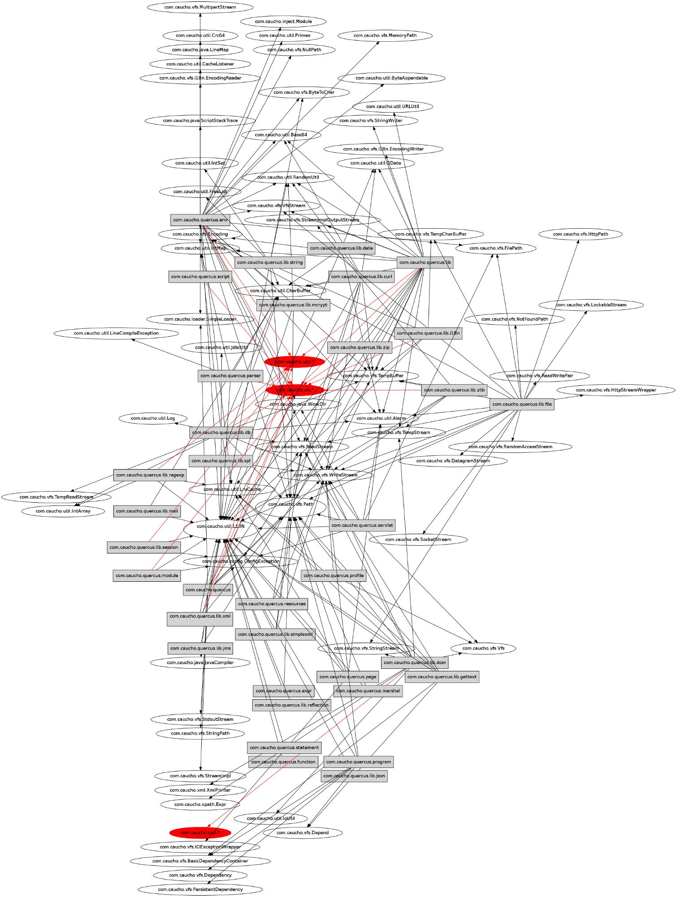

Is your business ready for PHP7?
Find out with Docker!
Kamil Kopaczyk
The problem
Will it work with my application?
Testing the whole thing
Environment
Where and how
Application
Legacy code
Spaghetti code
Application size
Server settings
Dependencies

Easy to set up
Docker Toolbox:
- Docker Client
- Docker Machine
- Docker Compose
- Docker Kitematic
- VirtualBox
Disposable
Resilient
Easy to switch environment
- apache/nginx
- php5/php7/hack
- anything?
Theory
What do we need:
- docker environment
- source code + php + nginx
Prerequisites
- docker engine
- docker client
- docker-compose
...we're one step closer...
CI, testing, staging, prod etc.
...but there are some caveats